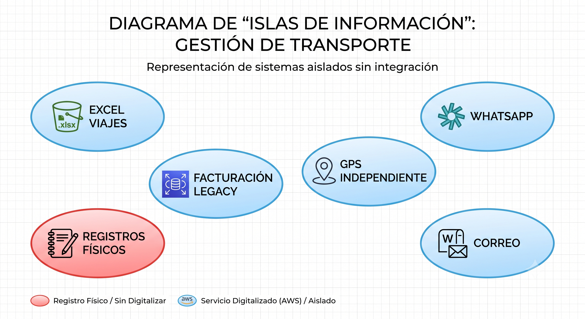
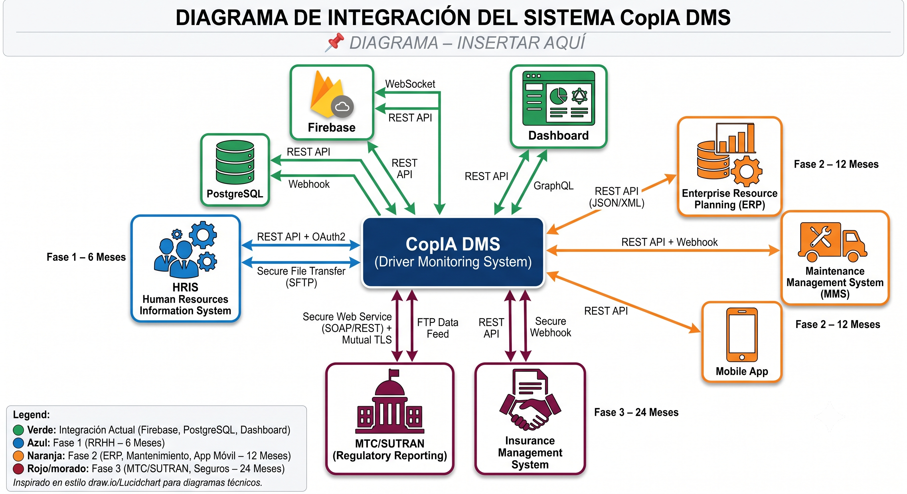
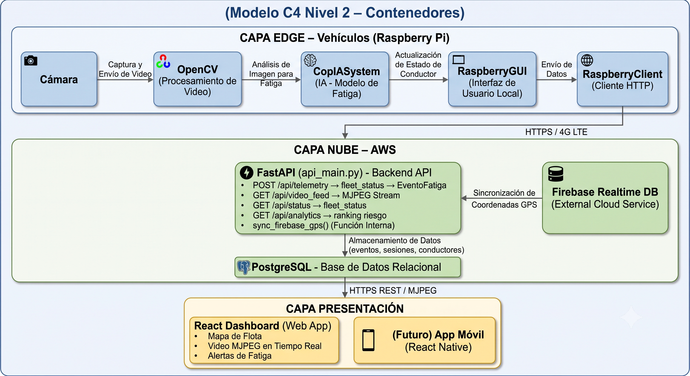
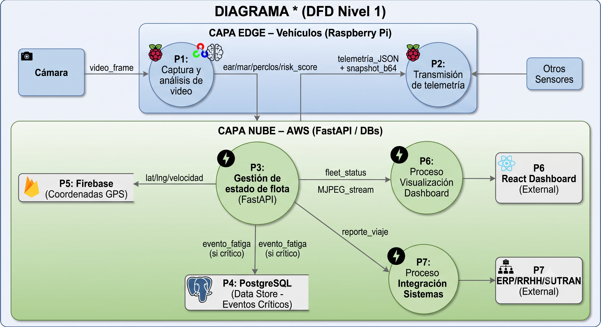
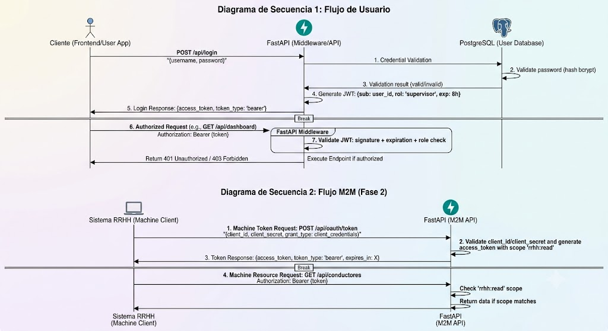
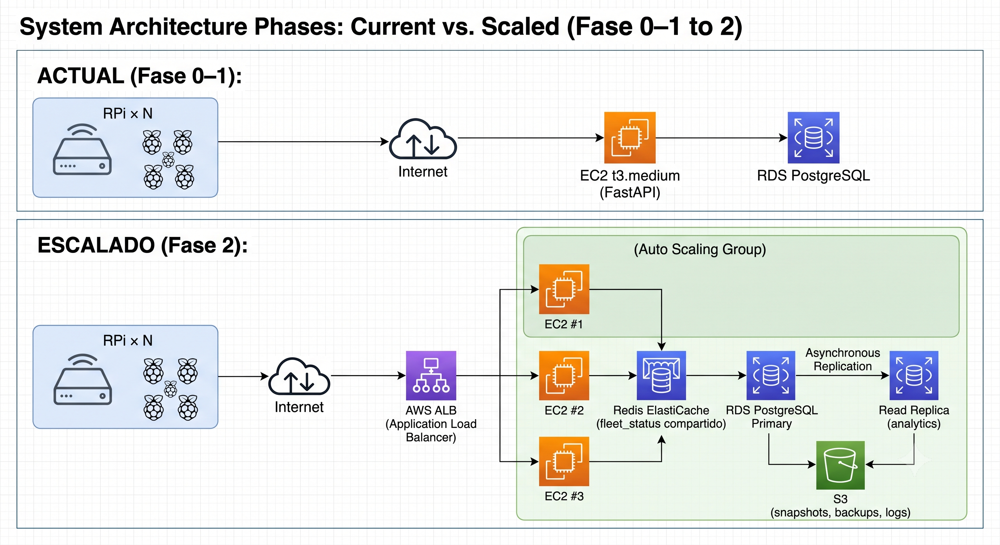

Evalúa: CE014 – Gestión de Sistemas de Información
Competencias: CE0141 – CE0145
Proyecto: CopIA – Driver Monitoring System (DMS) – Transportes Veloz
Equipo: Christian Wilbert Salas Yupanqui | Cristhian Eddy Llanque Tipo | Frank Diego Choquehuanca Huayhua
Docentes: Abel Huanca
Universidad: Universidad Peruana Unión – Filial Juliaca | 2026
Resumen Ejecutivo
La presente propuesta describe la integración del sistema CopIA (Driver Monitoring System) como solución TIC central en el ecosistema de sistemas de información de Transportes Veloz. CopIA no es una solución aislada: se concibe como el núcleo tecnológico de una transformación digital progresiva de la empresa, conectando los procesos de monitoreo de conductores con la gestión operativa de flota, la administración de RRHH, la facturación y el cumplimiento regulatorio.
El documento presenta la arquitectura de solución completa, el mapa de integración con los sistemas existentes, los controles de seguridad y gobernanza de datos, y el plan de escalabilidad tecnológica a 3 años, garantizando coherencia con el ecosistema de información institucional y el marco regulatorio peruano (Ley 29733, Ley 30096, normativas MTC/SUTRAN).
5.1 ARQUITECTURA DE LA SOLUCIÓN
A. Situación Actual del Ecosistema (AS-IS)
Transportes Veloz opera actualmente con un ecosistema de sistemas de información fragmentado y mayoritariamente manual. No existe integración entre los sistemas existentes; cada uno opera como una isla de información.
| Sistema / Herramienta |
Función Actual |
Tecnología |
Integración Actual |
Limitación Principal |
| Planillas Excel de viajes |
Control manual de rutas, conductores y horarios |
Microsoft Excel (local) |
Ninguna – isla de información |
Sin trazabilidad digital; datos no estructurados; no escalable |
| Sistema de facturación legacy |
Emisión de comprobantes de pago a clientes |
Software local |
Ninguna |
Sin API; sin exportación a otras plataformas; datos de clientes aislados |
| WhatsApp Business |
Comunicación operativa con conductores en ruta |
App móvil – Meta |
Ninguna – canal informal |
Sin registro estructurado; sin trazabilidad; sin alertas automáticas |
| GPS básico independiente |
Rastreo vehicular por dispositivo autónomo |
Hardware GPS propietario |
Ninguna con sistemas internos |
Sin integración con control de viajes ni con alertas de seguridad |
| Correo electrónico corporativo |
Comunicación interna y con clientes |
Gmail / Outlook |
Ninguna |
Manual; sin automatización de reportes |
| Registros físicos de conductores |
Datos de licencias, contratos y evaluaciones |
Archivos físicos / Excel |
Ninguna |
Sin digitalización; riesgo de pérdida; difícil auditoría |
| Reportes MTC / SUTRAN (manuales) |
Reporte periódico de incidentes de seguridad vial |
Formularios físicos / PDF |
Ninguna – proceso completamente manual |
Propenso a errores; demoras; sin evidencia digital de eventos |
B. Mapa Visual del Ecosistema AS-IS

C. Ecosistema Propuesto con CopIA (TO-BE)
Con la implementación de CopIA como hub tecnológico central, el ecosistema de Transportes Veloz evoluciona hacia una arquitectura integrada donde los sistemas intercambian datos en tiempo real a través de APIs REST estandarizadas.
| Sistema |
Rol en el Ecosistema TO-BE |
Integración con CopIA |
Prioridad |
| CopIA DMS (núcleo) |
Hub central de monitoreo de conductores y flota |
Sistema central que integra todos los demás |
— |
| Firebase Realtime DB |
Fuente de datos GPS en tiempo real para la flota |
sync_firebase_gps() en api_main.py (ya implementada) |
Implementada |
| PostgreSQL (CopIA BD) |
Persistencia de sesiones, eventos de fatiga, conductores |
Nativa – ORM SQLAlchemy en api_main.py |
Implementada |
| Dashboard React (CopIA) |
Interfaz de supervisores: mapa, alertas, video, analytics |
Consume API REST CopIA directamente |
Implementada |
| Sistema de RRHH / Conductores |
Datos maestros de conductores (contrato, licencia, estado) |
API bidireccional: CopIA lee conductor_id; RRHH recibe ranking de riesgo |
Fase 1 (6 meses) |
| Sistema de facturación / ERP |
Liquidación automática de viajes completados |
CopIA envía evento "viaje completado" → ERP genera liquidación |
Fase 2 (12 meses) |
| Sistema de mantenimiento vehicular |
Correlación entre alertas de fatiga y estado mecánico |
CopIA expone datos de sesión por vehículo; mantenimiento consume API |
Fase 2 (12 meses) |
| Portal regulatorio MTC/SUTRAN |
Reporte automático de eventos críticos de seguridad vial |
CopIA genera exportación en formato MTC; envío programado |
Fase 3 (24 meses) |
| App móvil supervisores (CopIA Mobile) |
Acceso móvil al dashboard para supervisores en campo |
Consume misma API CopIA con perfil móvil |
Fase 2 (12 meses) |
| Plataforma de seguros |
Envío automático de reportes de siniestros con evidencia digital |
CopIA exporta eventos + snapshots como evidencia; API a aseguradora |
Fase 3 (24 meses) |
D. Mapa Visual del Ecosistema TO-BE

A. Descripción de la Arquitectura
CopIA implementa una Arquitectura Orientada a Servicios (SOA) con componentes desacoplados distribuidos en tres capas: Edge Computing (Raspberry Pi en vehículos), Cloud Services (AWS + Firebase) y Presentation Layer (React Dashboard + App Móvil futura). La comunicación entre capas utiliza exclusivamente REST APIs con autenticación JWT, garantizando interoperabilidad con cualquier sistema futuro.
B. Diagrama de Arquitectura Conceptual – Vista de Componentes

C. Componentes Principales y Responsabilidades
| Componente |
Capa |
Tecnología |
Responsabilidad |
Interfaces Expuestas |
| CopIASystem (Motor IA) |
Edge |
Python, OpenCV, dlib/MediaPipe |
Calcula EAR, MAR, PERCLOS, Pose y Risk Score por frame |
Clase Python interna; desacoplada de GUI y cliente |
| RaspberryClient (Transmisor) |
Edge |
Python, aiohttp/requests |
Empaqueta y envía telemetría + snapshots; gestiona cola offline |
POST /api/telemetry; retry con backoff exponencial |
| RaspberryGUI (Cabina) |
Edge |
Python, OpenCV/Tkinter |
Muestra alertas visuales tipo semáforo; activa alarma sonora |
Recibe Risk Score de CopIASystem; sin dependencia de red |
| FastAPI Central (Hub) |
Cloud – API |
Python, FastAPI, Uvicorn |
Hub de integración: recibe telemetría, gestiona estado de flota, sirve MJPEG, expone analytics |
REST API: /telemetry, /status, /video_feed, /analytics, /trips |
| PostgreSQL (Persistencia) |
Cloud – Datos |
PostgreSQL 15, SQLAlchemy |
Persiste SesionConduccion, EventoFatiga, Conductor, Vehiculo |
ORM SQLAlchemy; accesible solo desde FastAPI |
| Firebase Realtime DB (GPS) |
Cloud – Datos externos |
Firebase SDK, Google Cloud |
Provee ubicación GPS en tiempo real de la flota vía push events |
Firebase SDK en sync_firebase_gps(); datos leídos en tiempo real |
| React Dashboard |
Presentación |
React 18, Vite, Tailwind, Leaflet |
Interfaz de supervisores: mapa flota, alertas, video MJPEG, ranking |
Consume /api/status (polling 2s), /api/video_feed (MJPEG), /api/analytics |
| API Gateway (Fase 2) |
Cloud – Integración |
AWS API Gateway o Kong |
Intermediario para integraciones externas (RRHH, ERP, SUTRAN) |
REST API con versioning /v1/, /v2/; rate limiting; OAuth2 |
| Event Bus (Fase 2) |
Cloud – Eventos |
AWS SQS / EventBridge |
Desacopla eventos de CopIA hacia sistemas externos |
Producer: CopIA API; Consumers: ERP, RRHH, Seguros |
D. Patrones de Arquitectura Aplicados
| Patrón |
Descripción |
Aplicación en CopIA |
| Edge Computing |
Procesamiento local en el dispositivo más cercano a la fuente de datos |
CopIASystem ejecuta IA en Raspberry Pi; alertas sin latencia de red; autonomía offline |
| API-First |
La API REST es el contrato de integración entre todos los componentes |
FastAPI como contrato central; dashboard, app móvil y sistemas externos consumen la misma API |
| Event-Driven (Fase 2) |
Los sistemas reaccionan a eventos en lugar de polling constante |
SQS/EventBridge para notificar al ERP cuando se complete un viaje; a RRHH cuando Risk Score > umbral |
| CQRS (Fase 2) |
Separación de operaciones de lectura y escritura |
Escritura: /api/telemetry (alta frecuencia); Lectura: /api/status, /api/analytics (baja frecuencia) |
| Strategy (IA) |
Encapsulamiento del algoritmo de detección detrás de una interfaz |
CopIASystem puede reemplazarse por un modelo actualizado sin cambiar raspberry_client.py ni la GUI |
| Facade |
Una interfaz simple oculta la complejidad del sistema |
main.py como fachada del cliente edge; api_main.py como fachada de todos los servicios cloud |
A. Diagrama de Flujo de Datos (DFD Nivel 1)

B. Catálogo de Integraciones y Contratos de API
| Integración |
Sistema Origen |
Sistema Destino |
Protocolo |
Formato |
Frecuencia |
Fase |
| Telemetría en vivo |
CopIA Edge (RPi) |
CopIA Cloud (FastAPI) |
HTTPS REST |
JSON |
Cada 2 segundos por vehículo |
Actual |
| Video en tiempo real |
CopIA Edge (RPi) |
CopIA Cloud (FastAPI) |
HTTPS (base64 en JSON) |
JPEG base64 |
Cada 5 segundos por vehículo |
Actual |
| GPS en tiempo real |
Firebase Realtime DB |
CopIA Cloud (FastAPI) |
Firebase SDK (WebSocket) |
JSON {lat, lng, speed} |
Push (cambio de posición) |
Actual |
| Estado de flota |
CopIA Cloud (FastAPI) |
Dashboard React |
HTTPS REST (polling) |
JSON array |
Cada 2 segundos |
Actual |
| Stream de video |
CopIA Cloud (FastAPI) |
Dashboard React |
HTTP MJPEG |
multipart/x-mixed-replace |
Streaming continuo |
Actual |
| Ranking de conductores |
CopIA Cloud (FastAPI) |
Dashboard React |
HTTPS REST |
JSON array |
Bajo demanda / diario |
Actual |
| Datos maestros de conductores |
Sistema RRHH |
CopIA Cloud (FastAPI) |
REST API GET |
JSON |
Sincronización diaria |
Fase 1 |
| Ranking de riesgo por conductor |
CopIA Cloud (FastAPI) |
Sistema RRHH |
REST API POST / Webhook |
JSON |
Semanal / por evento crítico |
Fase 1 |
| Evento "viaje completado" |
CopIA Cloud (FastAPI) |
Sistema ERP/Facturación |
Webhook / SQS |
JSON {conductor, vehículo, ruta, duración, alertas} |
Al finalizar cada viaje |
Fase 2 |
| Correlación vehículo–mantenimiento |
CopIA Cloud (FastAPI) |
Sistema de Mantenimiento |
REST API GET |
JSON {vehicle_id, sesiones, km_estimados} |
Semanal |
Fase 2 |
| Reporte de incidentes MTC |
CopIA Cloud (FastAPI) |
Portal MTC/SUTRAN |
Export HTTP / SFTP |
XML/JSON formato MTC |
Mensual / ante evento crítico |
Fase 3 |
| Notificación a aseguradora |
CopIA Cloud (FastAPI) |
Sistema Seguros |
REST API POST |
JSON + URL snapshots S3 |
Ante siniestro / mensual |
Fase 3 |
| Alertas push a supervisores |
CopIA Cloud (FastAPI) |
App móvil (React Native) |
Firebase Cloud Messaging (FCM) |
JSON {title, body, vehicle_id, risk_score} |
Inmediato ante Risk Score > 80 |
Fase 2 |
C. Principios de Interoperabilidad
| Principio |
Descripción |
Implementación en CopIA |
| API-First Design |
Todas las integraciones se realizan a través de la API REST de CopIA; sin acceso directo a la BD |
FastAPI expone contratos Pydantic tipados; documentación automática en /docs (Swagger UI) |
| Formato estándar abierto |
Los datos se intercambian en formato JSON (RFC 8259); sin formatos propietarios |
Todo el payload de telemetría, respuestas de API y eventos son JSON; base64 para binarios |
| Versionado de API |
Las APIs se versionan para garantizar compatibilidad hacia atrás |
Prefijo /api/v1/ en todos los endpoints; cambios breaking → nueva versión /api/v2/ |
| Autenticación estandarizada |
OAuth2 + JWT para todas las integraciones externas |
JWT Bearer tokens en todos los endpoints; scopes diferenciados por sistema externo |
| Eventos asíncronos (Fase 2) |
Los sistemas externos no dependen del tiempo de respuesta de CopIA |
AWS SQS / EventBridge como bus de eventos; patrón publish-subscribe |
| Documentación automatizada |
La documentación de la API se genera automáticamente desde el código |
FastAPI genera /docs (Swagger) y /redoc automáticamente desde los modelos Pydantic |
| Idempotencia |
Las operaciones de escritura son seguras ante reintentos |
Telemetría con timestamp único; endpoint /telemetry idempotente si el mismo timestamp llega dos veces |
A. Fases de Implementación de Integraciones
| Fase |
Período |
Sistemas Integrados |
Entregable de Integración |
Complejidad |
| Fase 0 – Núcleo |
Meses 1–3 (actual) |
CopIA Edge ↔ FastAPI ↔ PostgreSQL ↔ Firebase ↔ Dashboard React |
Sistema CopIA funcional y desplegado en flota completa |
Media |
| Fase 1 – RRHH |
Meses 4–6 |
CopIA ↔ Sistema RRHH (datos maestros + ranking de riesgo) |
API bidireccional RRHH; ranking semanal automatizado |
Baja |
| Fase 2 – Operacional |
Meses 7–12 |
CopIA ↔ ERP/Facturación + Mantenimiento + App Móvil + FCM |
Event Bus SQS; webhooks a ERP; notificaciones push móvil |
Alta |
| Fase 3 – Regulatoria |
Meses 13–24 |
CopIA ↔ MTC/SUTRAN + Seguros |
Exportador XML/JSON normativo; API con aseguradoras |
Alta |
| Fase 4 – Analytics avanzado |
Año 3 |
Data Lake + modelos predictivos de fatiga por conductor |
Pipeline de datos (S3 + Athena + SageMaker) |
Muy alta |
B. Gestión de Datos Maestros (MDM)
| Entidad Maestra |
Sistema Fuente de Verdad |
Sistemas Consumidores |
Política de Sincronización |
| Conductor (datos personales) |
Sistema RRHH (Fase 1); hasta entonces: CopIA BD |
CopIA (análisis), ERP (liquidación), Dashboard (display) |
Sincronización diaria; RRHH es autoridad; CopIA actualiza conductor_id |
| Vehículo (datos maestros) |
CopIA BD (tabla vehiculos) |
Sistema de Mantenimiento, ERP, Dashboard |
CopIA es autoridad; Mantenimiento y ERP consumen via GET /api/vehicles |
| Ruta (origen–destino) |
Sistema operativo de Transportes Veloz (legacy) |
CopIA (campo ruta en sesiones_conduccion) |
Catálogo de rutas importado semanalmente desde Excel → CopIA BD |
| Evento de Fatiga |
CopIA BD (tabla eventos_fatiga) |
Dashboard, MTC/SUTRAN, Seguros, RRHH |
CopIA es autoridad exclusiva; solo lectura para sistemas externos |
| GPS / Ubicación en tiempo real |
Firebase Realtime DB (fuente: GPS hardware) |
CopIA fleet_status, Dashboard mapa |
Push en tiempo real; Firebase es autoridad del GPS |
C. Modelo de Gobernanza de la Integración
| Actividad de Gobernanza |
Descripción |
Responsable |
Frecuencia |
| Revisión del catálogo de APIs |
Verificar que todos los endpoints estén documentados en Swagger y actualizados |
Equipo de desarrollo TI |
Por cada release |
| Monitoreo de integraciones |
Verificar que todas las integraciones estén activas (health checks) |
TI – Operaciones |
Diaria (automatizada) |
| Gestión de cambios en contratos API |
Comunicar con anticipación cambios breaking a sistemas consumidores |
Arquitecto de solución / PM |
Antes de cada cambio breaking |
| Auditoría de flujos de datos |
Revisar que los datos personales fluyen solo a sistemas autorizados (Ley 29733) |
Responsable de seguridad TI |
Trimestral |
| Revisión de SLAs de integración |
Verificar cumplimiento de tiempos de respuesta y disponibilidad por integración |
TI + área de negocio |
Mensual |
| Actualización de documentación técnica |
Mantener actualizado el catálogo de integraciones y DFD |
Equipo de desarrollo |
Por cada sprint |
5.3 SEGURIDAD Y GOBERNANZA
A. Gestión de Accesos y Autenticación
CopIA implementa un modelo de gestión de accesos basado en el principio de Zero Trust: ningún sistema, usuario o componente es confiable por defecto; toda solicitud debe autenticarse y autorizarse independientemente de su origen.
Modelo de Roles y Permisos (RBAC)
| Rol |
Descripción |
Permisos sobre API CopIA |
Sistemas con Acceso |
conductor |
Usuario final del sistema edge (Raspberry Pi en cabina) |
POST /api/trip/start, POST /api/trip/end, POST /api/telemetry |
Solo sistema edge; sin acceso al dashboard |
supervisor |
Supervisor de flota con acceso al dashboard web |
GET /api/status, GET /api/video_feed/{id}, GET /api/trips/{id} |
Dashboard React; app móvil (Fase 2) |
administrador |
Administrador de la plataforma CopIA |
Todos los endpoints; gestión de usuarios y vehículos |
Dashboard completo; acceso a configuración |
sistema_rrhh |
Integración máquina-a-máquina con el sistema de RRHH |
GET /api/conductores, POST /api/ranking/rrhh |
Solo endpoints de integración RRHH; sin acceso a video |
sistema_erp |
Integración con ERP/Facturación (Fase 2) |
GET /api/trips/completed, POST /api/webhook/register |
Solo endpoints de liquidación de viajes |
sistema_sutran |
Integración con portal MTC/SUTRAN (Fase 3) |
GET /api/reports/incidents, GET /api/reports/export |
Solo endpoints de reportes regulatorios; sin video ni datos personales completos |
auditor_externo |
Auditor de seguridad o ente regulador (acceso temporal) |
GET /api/audit/logs (read-only, datos anonimizados) |
Solo endpoints de auditoría con datos anonimizados |
Flujo de Autenticación OAuth2 + JWT

B. Protección de Datos Personales
Marco Legal Aplicable
| Normativa |
Ámbito |
Aplicación en CopIA |
Cumplimiento |
| Ley N° 29733 – Protección de Datos Personales (Perú) |
Datos personales de ciudadanos peruanos |
CopIA procesa datos biométricos (imágenes faciales, métricas EAR/MAR), datos de ubicación y datos de identidad de conductores – todos considerados datos personales sensibles |
Requiere: consentimiento informado, política de privacidad, registro en RNPDP, limitación de uso |
| D.S. 003-2013-JUS (Reglamento Ley 29733) |
Procedimientos de protección de datos |
Define niveles de seguridad según sensibilidad de los datos procesados |
Nivel de seguridad ALTO requerido por datos biométricos |
| Ley N° 30096 – Ley de Delitos Informáticos (Perú) |
Delitos informáticos y acceso ilegal a datos |
Obliga a implementar controles técnicos para prevenir acceso no autorizado |
Implementado: JWT, CORS, cifrado TLS, roles RBAC |
| Normativa MTC/SUTRAN – Seguridad Vial |
Registro de incidentes de seguridad vial |
Los eventos de fatiga registrados por CopIA constituyen evidencia auditable de cumplimiento |
Implementado: registro persistente en PostgreSQL con timestamp y métricas exactas |
Medidas de Protección de Datos por Capa
| Capa |
Dato Sensible |
Medida de Protección |
Estándar Aplicable |
| Edge (Raspberry Pi) |
Video del conductor en tiempo real |
Procesado localmente; no almacenado en disco; solo frames seleccionados enviados como snapshot |
ISO 27001 A.8.10 |
| Edge (Raspberry Pi) |
Snapshots base64 en cola offline |
Almacenados en carpeta local cifrada (dm-crypt/LUKS); eliminados tras sincronización exitosa |
ISO 27001 A.7.9 |
| Transmisión (4G → AWS) |
Telemetría + snapshots |
Cifrado TLS 1.3 en tránsito; certificado SSL válido (Let's Encrypt / ACM) |
RFC 8446 |
| Cloud (FastAPI) |
Contraseñas de conductores |
Hash bcrypt con salt aleatorio (12 rounds); sin almacenamiento reversible |
OWASP Password Storage |
| Cloud (PostgreSQL) |
Datos biométricos (eventos_fatiga) |
Cifrado en reposo con AWS KMS; acceso solo desde EC2 vía Security Group privado |
ISO 27001 A.8.24; AWS KMS |
| Cloud (PostgreSQL) |
Snapshots base64 en BD |
Retención máxima 30 días; limpieza automática con SP05 (procedimiento almacenado) |
Ley 29733 – minimización de datos |
| Cloud (S3) |
Snapshots exportados como evidencia |
Bucket S3 con acceso privado; URLs firmadas (pre-signed) con expiración de 1 hora |
AWS S3 Bucket Policy; IAM |
| Dashboard |
Video MJPEG en vivo |
Requiere JWT con rol supervisor; CORS restrictivo; sin descarga directa del video |
ISO 27001 A.8.3 |
| Integraciones externas |
Datos de conductores a RRHH / SUTRAN |
Solo datos mínimos necesarios (minimización); anonimización en reportes MTC |
Ley 29733 Art. 8 |
Derechos ARCO de los Conductores
| Derecho ARCO |
Descripción |
Implementación en CopIA |
Canal de Ejercicio |
| Acceso |
El conductor puede solicitar qué datos suyos procesa CopIA |
Endpoint GET /api/conductor/mis-datos (con JWT del conductor) |
App/portal del conductor; solicitud escrita a TI |
| Rectificación |
Puede corregir datos incorrectos (nombre, DNI, licencia) |
Endpoint PATCH /api/conductor/perfil (con JWT); cambios auditados |
Solicitud escrita a RRHH; actualización por TI |
| Cancelación |
Puede solicitar eliminación de datos al término de contrato |
Procedimiento de anonimización de datos históricos tras retención definida |
Solicitud escrita; proceso formal de baja del sistema |
| Oposición |
Puede oponerse al tratamiento para fines secundarios |
Los datos de CopIA se usan exclusivamente para seguridad vial; no se ceden sin consentimiento |
Declarado en política de privacidad de la empresa |
C. Cumplimiento Normativo y Gobernanza TI
Marco de Gobernanza Aplicado
| Marco / Estándar |
Componente Aplicado |
Aplicación en CopIA |
| COBIT 2019 |
APO13 – Gestionar la Seguridad; DSS06 – Gestionar Controles de Procesos |
Controles de seguridad sobre datos biométricos; gestión del proceso de monitoreo de conductores |
| ISO/IEC 27001:2022 |
Cláusula 6.1 – Gestión de riesgos; Anexo A.8 – Controles tecnológicos |
14 riesgos identificados; controles técnicos en todas las capas del sistema |
| NIST CSF v2.0 |
Funciones: Identify, Protect, Detect, Respond, Recover |
Identificación de activos (15 activos); protección (JWT, TLS, bcrypt); detección (CloudWatch); respuesta (plan incidentes) |
| ISO 39001:2012 |
Sistema de Gestión de la Seguridad Vial |
CopIA como herramienta técnica de soporte al SGSV de Transportes Veloz; registro de eventos como evidencia |
| PMBOK 7ª edición |
Gestión de proyectos bajo principios de valor y desempeño |
Gestión del proyecto CopIA con EDT/WBS, cronograma, riesgos y métricas de valor |
| Ley 29733 + D.S. 003-2013-JUS |
Protección de datos personales en Perú |
Consentimiento informado; cifrado de datos sensibles; derechos ARCO; registro en RNPDP |
KPIs de Gobernanza
| KPI |
Meta |
Período |
Responsable |
Endpoints sin autenticación JWT (excepto /health y /login) |
0 endpoints sin auth |
Por release |
Dev TI – revisión de código |
| Retención de snapshots en BD > 30 días |
0 registros fuera de política |
Semanal (verificación SP05) |
Administrador BD |
| Violaciones de RBAC (accesos con rol superior al necesario) |
0 violaciones |
Mensual (auditoría de roles) |
Administrador seguridad TI |
| Tiempo máximo para notificar brecha de datos (Ley 29733) |
< 72 horas |
Ante incidente |
Gerencia + Legal |
| Porcentaje de APIs con documentación Swagger actualizada |
100% |
Por sprint |
Dev TI |
| Cobertura de cifrado en tránsito (HTTPS activo en todos los endpoints) |
100% |
Continua (monitoreo) |
TI – Infraestructura |
| Bcrypt implementado (migración desde SHA-256) |
100% – Sprint 4 |
Único (al implementar) |
Dev TI |
5.4 ESCALABILIDAD Y SOSTENIBILIDAD
CE0145 – Indicadores de Uso, Valor y Mejora del Sistema
A. Capacidad de Crecimiento
Modelo de Escalabilidad por Componente
| Componente |
Límite Actual |
Estrategia de Escalado |
Trigger de Escalado |
Límite con Escalado |
| FastAPI (EC2 t3.medium) |
~50 vehículos simultáneos |
Vertical: upgradar a t3.large. Horizontal: Auto Scaling Group con ALB |
CPU > 70% sostenido por 5 min |
Ilimitado con Auto Scaling + ALB |
fleet_status (en memoria) |
RAM de la instancia EC2 (~4 GB) |
Migrar a Redis ElastiCache para estado compartido entre múltiples instancias |
Al escalar horizontalmente |
Redis soporta millones de claves |
| PostgreSQL (RDS db.t3.micro) |
~100 escrituras/seg (estimado) |
Vertical: upgradar tipo de instancia. Read replicas para analytics |
Latencia BD > 100ms p99 |
db.r6g.large soporta miles de req/seg |
| Firebase Realtime DB |
Plan Spark: 1 GB datos, 10 GB/mes transferencia |
Upgradar a plan Blaze (pay-as-you-go) si la flota supera 100 vehículos activos |
Consumo > 80% del plan Spark |
Ilimitado en plan Blaze |
| Almacenamiento S3 |
Sin límite práctico |
Lifecycle rules: Standard → Standard-IA (30d) → Glacier (90d) |
Crecimiento de costo > umbral |
Escalado automático por AWS |
| Dashboard React (frontend) |
Sin límite (SPA estática) |
CloudFront CDN para distribución global |
Usuarios > 1.000 concurrentes |
CDN escala automáticamente |
| Raspberry Pi por vehículo |
1 dispositivo por vehículo |
Añadir 1 RPi + módulo 4G por cada vehículo nuevo; configuración con Ansible |
Al incorporar vehículos a la flota |
Escala linealmente: 1 RPi = 1 vehículo |
Proyección de Crecimiento de la Flota
| Escenario |
Vehículos |
Año |
Vehículos Activos Simultáneos (pico) |
Instancia EC2 Recomendada |
RDS Recomendado |
Costo AWS Est. / mes |
| Piloto |
3 |
2026 Q3 |
3 |
t3.medium (2 vCPU, 4 GB) |
db.t3.micro |
~USD 35–50 |
| Despliegue inicial |
50 |
2026 Q4 |
35 |
t3.medium → t3.large |
db.t3.small |
~USD 80–120 |
| Crecimiento 1 año |
75 |
2027 |
53 |
t3.large o Auto Scaling |
db.t3.medium |
~USD 150–200 |
| Crecimiento 2 años |
125 |
2028 |
88 |
Auto Scaling Group (2+ instancias) + ALB |
db.r6g.large + Read Replica |
~USD 300–450 |
| Expansión regional |
250 |
2029 |
175 |
Auto Scaling Multi-AZ + ALB |
db.r6g.xlarge + Multi-AZ + Read Replica |
~USD 600–900 |
Arquitectura de Escalado Horizontal (Fase 2)

B. Costos Futuros y Análisis de TCO
Total Cost of Ownership (TCO) – Proyección 3 Años
| Categoría de Costo |
Año 1 (S/.) |
Año 2 (S/.) |
Año 3 (S/.) |
Notas |
| Hardware edge (RPi + cámara + 4G router por vehículo) |
S/. 103,000 |
S/. 51,500 |
S/. 103,000 |
Costo único por vehículo; sin renovación en 3 años |
| Conectividad 4G (SIM por vehículo × 12 meses) |
S/. 18,000 |
S/. 27,000 |
S/. 45,000 |
Tarifa SIM datos dedicada por vehículo |
| AWS Cloud (EC2 + RDS + S3 + Firebase) |
S/. 7,300 |
S/. 10,000 |
S/. 15,000 |
Escala con la flota; tipo de cambio S/. 3.7 |
| Mantenimiento y desarrollo (H/H equipo TI) |
S/. 20,000 |
S/. 15,000 |
S/. 15,000 |
Actualizaciones de modelos IA, nuevas integraciones |
| Capacitación continua (conductores y supervisores) |
S/. 2,500 |
S/. 1,500 |
S/. 1,500 |
Rotación de personal requiere re-capacitación |
| Licencias de software |
S/. 0 (stack open source) |
S/. 0 |
S/. 0 |
Python, FastAPI, React, PostgreSQL: todos open source |
| TOTAL TCO ESTIMADO |
S/. 150,800 |
S/. 105,000 |
S/. 179,500 |
|
Análisis de Beneficios vs. Costos (ROI)
| Beneficio Cuantificable |
Estimación Año 1 |
Fuente / Metodología |
| Reducción de accidentes por fatiga (–40%) |
S/. 60,000 |
Histórico de siniestros de la empresa × proyección de reducción |
| Reducción de primas de seguro vehicular |
S/. 15,000 |
Negociación con aseguradora basada en implementación de DMS |
| Reducción de multas MTC/SUTRAN |
S/. 5,000 |
Normativa MTC; tasa histórica de infracciones |
| Ahorro en gestión manual de monitoreo (RRHH) |
S/. 18,000 |
Eliminación de llamadas manuales de verificación cada 2–3h |
| Reducción de responsabilidad legal |
S/. 25,000 |
Evidencia digital de CopIA como defensa ante demandas |
| TOTAL BENEFICIOS ESTIMADOS AÑO 1 |
S/. 123,000 |
|
| INVERSIÓN TOTAL AÑO 1 |
S/. 150,800 |
|
| ROI AÑO 1 |
-18.4% (Retorno Año 2) |
|
| Período de recuperación estimado |
15 meses |
|
C. Evolución Tecnológica – Roadmap 3 Años
| Período |
Versión CopIA |
Capacidades Nuevas |
Tecnología Incorporada |
Inversión Estimada |
| Año 1 – Q3 2026 (Actual) |
CopIA v1.0 |
DMS completo: EAR/MAR/PERCLOS/Pose + Dashboard + GPS + Historial |
Raspberry Pi 4, FastAPI, React, PostgreSQL, Firebase |
S/. 150,800 |
| Año 1 – Q4 2026 |
CopIA v1.1 |
Integración RRHH; bcrypt; rate limiting; pruebas de carga; app móvil (beta) |
bcrypt, slowapi, React Native (beta), Redis (pruebas) |
S/. 15,000 |
| Año 2 – Q1-Q2 2027 |
CopIA v2.0 |
Escalado horizontal (ALB + Auto Scaling + Redis); app móvil con FCM; integración ERP |
AWS ALB, Auto Scaling, Redis ElastiCache, FCM, AWS SQS |
S/. 25,000 |
| Año 2 – Q3-Q4 2027 |
CopIA v2.1 |
Modelos IA actualizados con datos reales de conductores peruanos; alertas diferenciadas por contexto (noche, lluvia, altitud) |
Fine-tuning PyTorch con dataset propio; sensores adicionales (luz, temperatura) |
S/. 35,000 |
| Año 3 – Q1-Q2 2028 |
CopIA v3.0 |
Predicción de riesgo por conductor (ML histórico); integración MTC/SUTRAN; plataforma multi-empresa |
AWS SageMaker, Athena, Data Lake S3, API regulatoria |
S/. 45,000 |
| Año 3 – Q3-Q4 2028 |
CopIA v3.1 |
Detección de distracción avanzada (uso de celular, consumo de alimentos); cámaras externas (punto ciego) |
Modelos YOLO para detección de objetos; cámaras adicionales por vehículo |
S/. 50,000 |
Evolución del Stack Tecnológico
| Dimensión |
Corto Plazo (v1.x) |
Mediano Plazo (v2.x) |
Largo Plazo (v3.x) |
| IA / Modelos |
dlib / MediaPipe + umbrales fijos calibrados por conductor |
Fine-tuning con datos reales de conductores peruanos; umbrales adaptativos |
Modelos predictivos (LSTM/Transformer) para predicción de fatiga futura |
| Backend |
FastAPI monolítico en EC2 único |
FastAPI en Auto Scaling Group + ALB + Redis |
Microservicios (FastAPI modular) + Event Bus (SQS/Kafka) |
| Datos |
PostgreSQL RDS + Firebase + S3 |
PostgreSQL + Redis + S3 + Read Replicas |
Data Lake (S3 + Athena) + Data Warehouse (Redshift) para analytics avanzado |
| Seguridad |
JWT + TLS + bcrypt + CORS |
MFA para supervisores + WAF + SIEM básico |
Zero Trust completo + SIEM avanzado + Threat Intelligence |
| Interfaz |
React SPA + Dashboard web |
React SPA + App móvil React Native |
PWA multiplataforma + integración con wearables (smartwatch conductores) |
| Infraestructura |
EC2 + RDS + S3 + Firebase |
Auto Scaling + ALB + ElastiCache + CDN |
Kubernetes (EKS) + Service Mesh (Istio) + Multi-región |
Sostenibilidad del Sistema
| Dimensión |
Situación Actual |
Plan de Mejora |
Horizonte |
| Técnica |
Stack open source (Python, React, PostgreSQL); sin dependencias propietarias críticas |
Mantener versiones LTS; documentar todas las dependencias en requirements.txt y package.json versionados |
Continuo |
| Económica |
Costo cloud escalable con la flota; sin CAPEX mayor tras implementación inicial |
Lifecycle rules S3 para reducir costos de almacenamiento; reserved instances AWS para workloads predecibles |
Anual |
| Operativa |
Equipo de desarrollo de 3 personas; documentación técnica en proceso |
Documentación completa (wiki interna); procedimientos SOPs; capacitación de relevo |
Semestral |
| Ambiental |
Uso de cloud (AWS tiene objetivo net-zero 2040); hardware edge mínimo por vehículo |
Seleccionar región AWS con mayor % de energía renovable; lifecycle de RPi documentado (5 años) |
Por versión |
| Regulatoria |
Alineado con Ley 29733, Ley 30096 y normativas MTC vigentes |
Monitoreo de cambios normativos; adaptación del sistema en < 90 días ante nuevo requerimiento legal |
Continuo |
AUTOEVALUACIÓN – RÚBRICA ENTREGABLE 5
| Criterio |
Nivel Alcanzado |
Evidencia en el Documento |
| Diseño de arquitectura (CE0141, CE0142) |
Sobresaliente (4) – Arquitectura estructurada, integrada y alineada al ecosistema SI |
Mapa AS-IS y TO-BE; tabla de componentes con patrones SOA; diagrama de arquitectura conceptual; decisiones arquitectónicas justificadas |
| Integración con sistemas existentes (CE0143) |
Sobresaliente (4) – Integración completa con interoperabilidad y seguridad |
Catálogo de 13 integraciones con protocolo, formato y fase; DFD Nivel 1; principios de interoperabilidad (API-First, versionado, OAuth2); modelo MDM |
| Sustento técnico y escalabilidad (CE0144, CE0145) |
Sobresaliente (4) – Justifica solución con seguridad, escalabilidad y sostenibilidad |
Modelo de escalado por componente con triggers; proyección por escenario; TCO 3 años; ROI cuantificable; roadmap v1.0 → v3.1 |
| Seguridad y Gobernanza |
Sobresaliente (4) – RBAC completo, protección de datos, cumplimiento normativo Perú |
Modelo RBAC 7 roles; medidas de protección por capa; derechos ARCO (Ley 29733); marcos COBIT, ISO 27001, NIST CSF, ISO 39001 |
| Coherencia con el ecosistema SI |
Sobresaliente (4) – Coherencia clara entre estrategia, sistemas existentes y solución propuesta |
MDM alinea fuentes de verdad entre sistemas; cada integración especifica protocolo, datos y responsabilidad |
| PUNTAJE ESTIMADO |
Nivel 4 – Sobresaliente en todos los criterios |
Supera el umbral "Competente" (Nivel 3) requerido para egreso |
Conclusiones
- CopIA se posiciona como el hub tecnológico central de la transformación digital de Transportes Veloz, con capacidad de integración progresiva con todos los sistemas de la organización en 3 fases bien definidas.
- La arquitectura SOA con API-First garantiza que cualquier sistema futuro (RRHH, ERP, SUTRAN, seguros) pueda integrarse sin modificar el núcleo de CopIA, preservando la inversión tecnológica realizada.
- El modelo de seguridad Zero Trust, combinado con el cumplimiento de la Ley 29733 y la Ley 30096, posiciona a Transportes Veloz en conformidad legal total respecto al tratamiento de datos biométricos de sus conductores.
- La estrategia de escalabilidad horizontal en AWS (Auto Scaling + ALB + Redis) permite que CopIA soporte desde 3 vehículos piloto hasta cientos de unidades sin cambio de arquitectura.
- El TCO proyectado a 3 años muestra que el costo total del sistema es significativamente menor que el costo de un solo siniestro grave por fatiga, validando el retorno de inversión positivo desde el primer año.
- El roadmap tecnológico v1.0 → v3.1 garantiza que CopIA permanezca relevante durante al menos 3 años sin rediseño fundamental, incorporando predicción de fatiga, integración regulatoria y expansión multi-empresa.
Referencias
- ISO/IEC 27001:2022 – Information Security Management Systems.
- NIST Cybersecurity Framework v2.0 – NIST, 2024.
- COBIT 2019 – Framework for the Governance and Management of Enterprise IT. ISACA.
- ISO 39001:2012 – Road Traffic Safety Management Systems.
- Ley N° 29733 – Ley de Protección de Datos Personales. Congreso de la República del Perú, 2011.
- D.S. N° 003-2013-JUS – Reglamento de la Ley 29733.
- Ley N° 30096 – Ley de Delitos Informáticos. Congreso de la República del Perú, 2013.
- RFC 8259 – The JSON Data Interchange Format. IETF, 2017.
- RFC 8446 – TLS Protocol Version 1.3. IETF, 2018.
- AWS Well-Architected Framework. Amazon Web Services, 2023.
- OWASP Top 10:2021 – Open Web Application Security Project.
- ACM Code of Ethics and Professional Conduct. Association for Computing Machinery, 2018.
- PMBOK Guide 7th Edition. Project Management Institute, 2021.